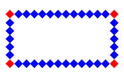

元素的边框就是围绕元素内容和内边距的一条或多条线。 其边框圆角、边框阴影属性，应用十分广泛，兼容性也相对较好，具有符合渐进增强原则的特征，我们需要重点掌握。
语法
border：[ border-width ] || [ border-style ] || [ border-color ]
边框属性
- border 简写属性，用于把针对四个边的属性设置在一个声明。
- border-width 简写属性，用于为元素的所有边框设置宽度，或者单独地为各边边框设置宽度。
- 常用单位为像素(px)、em
- thin细的边框。/medium 默认/thick 定义粗的边框。
- border-style 用于设置元素所有边框的样式，或者单独地为各边设置边框样式。
- none 定义无边框。
- dotted 定义点状边框
- dashed 定义虚线
- solid 定义实线。
- double 定义双线
- groove 定义 3D 凹槽边框。
- ridge 定义 3D 垄状边框。
- inset 定义 3D inset 边框
- outset 定义 3D outset 边框。
- border-color 简写属性，设置元素的所有边框中可见部分的颜色，或为 4 个边分别设置颜色。
- border-bottom 简写属性，用于把下边框的所有属性设置到一个声明中。
- border-bottom-color 设置元素的下边框的颜色。
- border-bottom-style 设置元素的下边框的样式。
- border-bottom-width 设置元素的下边框的宽度。
- border-left 简写属性，用于把左边框的所有属性设置到一个声明中。
- border-left-color 设置元素的左边框的颜色。
- border-left-style 设置元素的左边框的样式。
- border-left-width 设置元素的左边框的宽度。
- border-right 简写属性，用于把右边框的所有属性设置到一个声明中。
- border-right-color 设置元素的右边框的颜色。
- border-right-style 设置元素的右边框的样式。
- border-right-width 设置元素的右边框的宽度。
- border-top 简写属性，用于把上边框的所有属性设置到一个声明中。
- border-top-color 设置元素的上边框的颜色。
- border-top-style 设置元素的上边框的样式。
- border-top-width 设置元素的上边框的宽度。
概念
圆角处理时，脑中要形成圆、圆心、长半径、短半径的概念，正圆是椭圆的一种特殊情况。
可分别设置长、短半径，以“/”进行分隔，遵循“1，2，3，4”规则，“/”前面的1~4个用来设置横轴半径（分别对应横轴1、2、3、4位置 ），“/”后面1~4个参数用来设置纵轴半径（分别对应纵轴1、2、3、4位置 ）
当圆角半径小于或等于边框宽度时，元素内角是直角
语法
-
border-image-source : none | <url>
- 默认值：none
- 该属性用于指定是否用图像定义边框样式或图像来源路径。
-
border-image-slice : [ <number> | <percentage> ]{1,4} && fill?
- 默认值：100%
- 该属性用于指定对边框背景图的分割方式,指定图像的边界向内偏移。
- 写本文档时尚无浏览器支持参数值 fill 关键字
- 此属性指定顶部，右，底部，左边缘的图像向内偏移，分为九个区域：四个角，四边和中间。图像中间部分将被丢弃（完全透明的处理），除非填写关键字。 如果省略第四个数字/百分比，它和第二个相同的。如果也省略了第三个，它和第一个是相同的。如果也省略了第二个，它和第一个是相同的。
设置的图片将会被“切割”成九宫格形式，然后进行设置。如下图“切割”完成后生成虚拟的9块图形，然后按对应位置设置背景， 其中四个角位置、形状保持不变，中心位置水平垂直两个方向平铺。如下图:
-
border-image-repeat : [ stretch | repeat | round | space ]{1,2}
- 默认值：stretch
- stretch 默认值。拉伸图像来填充区域
- repeat 单纯平铺多余部分，会被“裁切”而不显示。
- round 会自动调整尺寸，完整显示边框图片。 
- space 类似 repeat 值。如果无法完整平铺所有图像，扩展空间会分布在图像周围
- 用于图像边界是否应重复（repeated）、拉伸（stretched）或铺满（rounded）。
- 该属性用于指定边框背景图的填充方式。可定义0-2个参数值，即水平和垂直方向。如果2个值相同，可合并成1个，表示水平和垂直方向都用相同的方式填充边框背景图；如果2个值都为stretch，则可省略不写。
- 写本文档时Opera尚不支持该属性，但却默认使用了stretch的效果
- 默认值：stretch
一个例子
根据图示，切割完 border 的背景切片后，并且也已经设置了 border 的宽度（重要）。将相应的切片填充到 border 的相应位置。 需要注意的是：不论 border 的宽度设置的多大，后面切割的参数都是根据 border-image 引入图片的尺寸设置的参数, 或者说是根据引入图片大小设置的切割参数。 切割后的四周的八个切片，四个角根据 border 设置的大小全尺寸自动缩放显示到 border 对应的四个角。除四个角外的其他中间切片（上中，右中间，下中，左中间）， 可以根据设置做拉伸或重复的设置操作显示到对应的 border 位置。

语法
box-shadow: h-shadow v-shadow blur spread color inset;
boxShadow 属性把一个或多个下拉阴影添加到框上。该属性是一个用逗号分隔阴影的列表， 每个阴影由 2-4 个长度值、一个可选的颜色值和一个可选的 inset 关键字来规定。省略长度的值是 0。
- h-shadow 必需的。水平阴影的位置。允许负值。水平偏移量 正值向右 负值向左
- v-shadow 必需的。垂直阴影的位置。允许负值。垂直正值向下 负值向上。
- blur 可选。模糊距离。（从一个颜色值在一定距离内进行一个渐变至透明的过程），模糊度是不能为负
- spread 可选。阴影的大小
- color 可选。阴影的颜色。在CSS颜色值寻找颜色值的完整列表
- inset 可选。从外层的阴影（开始时）改变阴影内侧阴影
说明：
- 偏移量和阴影扩展也是数学运算的，即正负会相互抵消。
- 偏移量和模糊度是可以相加计算，偏移量负号只代表方向。
- 设置边框阴影不会影响盒子的布局，即不会影响其兄弟元素的布局。
- spread可以与blur、h-shadow、v-shadow相互抵消，blur不可为负值
- 可以设置多重边框阴影，实现更好的效果，增强立体感。